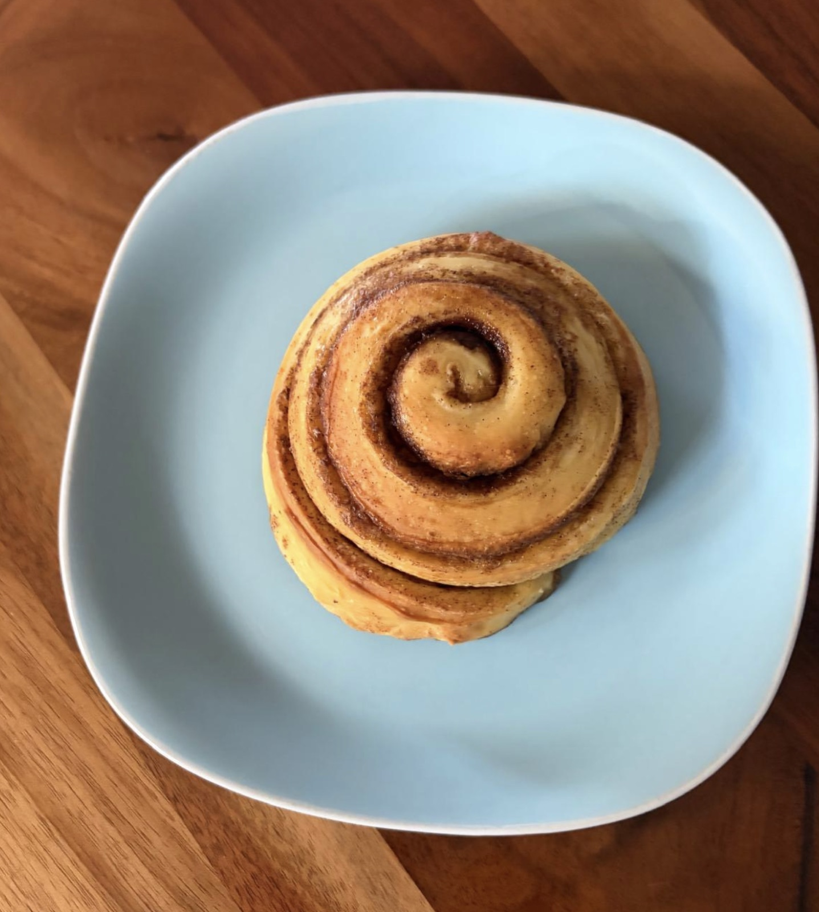

Cinnamon Scroll
A soft, buttery cinnamon scroll layered with warm cinnamon sugar. Freshly baked for a soft, fluffy texture and the perfect balance of sweet spice. Finish it off with our smooth cream cheese icing as an optional extra.
$4.50 each · 3 for $12.50 · 6 for $23.00
Cream cheese icing +$1.50 per scroll (optional)
Ingredients
Bakers wheat flour, whole milk, unsalted butter (milk), brown sugar, whole eggs, white sugar, wholemeal wheat flour, fine salt, ground cinnamon, vanilla extract.
Frosting ingredients: cream cheese (milk), icing sugar, unsalted butter (milk), whole milk, vanilla extract.
Contains: Gluten, Wheat, Dairy, Eggs
May contain: Sesame